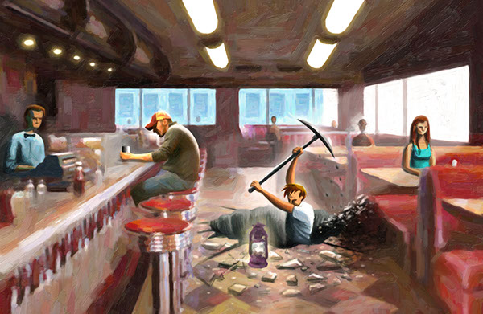

ДОСТАТОЧНО ЗАХОТЕТЬ

Если ты желаешь, чтобы мир был другим, меняй его.
Вот, с чего можно начать:
1. Изучи идею: прочитай книжек и комиксов (сполна и бесплатно? здесь! — например, Боло-Боло), посмотри видео, фильмы и документалки, подпишись на анархические группы в ВК (с фейка!), Telegram или сверхприватном Session, пообщайся с людьми.
2. Ты не один/одна/одни! Анархистов на самом деле потрясающе немало во всех уголках мира. Поищи движения в своём городе (например, в инстаграме: "anarchists berlin", "anarchist berlin"). Существует множество самых разных: от книжных кружков и интеллектуальных дебатов до аффинити-групп, устраивающих перфомансы и акции. Не кричи всем, что ты анархист и ищешь анархистов — так можно нарваться только на ментов или идиотов.
3. Нет группы? Создай её! Не происходит перфомансов? Проведи их!
Когда втянешься, действуй по правилу "САЖАЕМ" и посади свой
Создавай (группы, проекты, инициативы, дистро, сквоты, контрэкономику)
Агитируй (друзей, в интернете, в метро, на улице, на фестивалях; раскрывай секреты, ошибайся, шпионь, отказывайся от школьного оценивания)
Жертвуй (на развитие, на поддержку, анархическим коллективам, разным командам против пыток, Всемирному Анархическому Фонду)
Активничай (проводи перфомансы, акции, саботажи, диспродукции, дисрупции; в этой книге можно найти немало хороших методик, но она сексистская ◔︵◔)
Единись (связывайся с другими коллективами, запрашивай помощь (в т.ч. экономическую) из Революционного Анархического Фонда или Всемирного Анархического Фонда по нужде, планируй совместные акции)
Мни (учись, читай, развивайся).
Верующие могут добавить ещё одну букву "М" — молись!;)
Спасибо за прохождение квеста!
Я не считал, сколько раз ты ответил/а неправильно, ведь важно не количество ошибкок, но научили ли они чему-то.